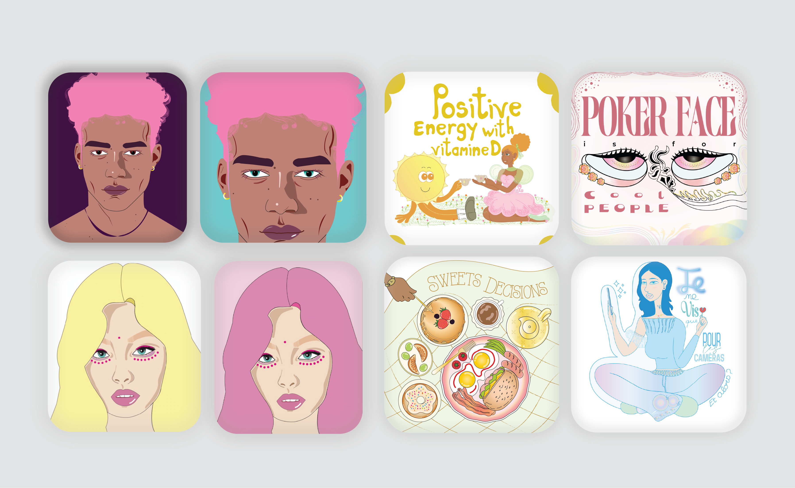
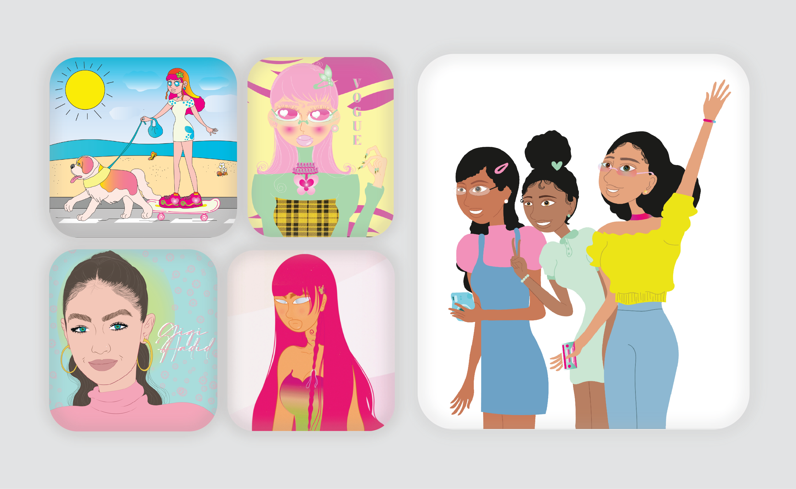
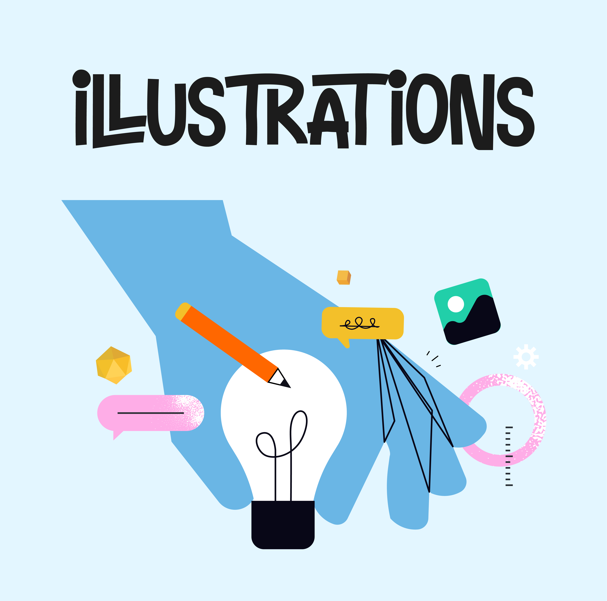

En dehors des commandes
Mes passions
Ici, retrouvez mes explorations libres, mes inspirations quotidiennes et mon univers créatif personnel !



01
Illustrations & Lettrage Pop
Explorations libres et carnet d'affiches inspirantes autour de la positivité, des textures rétro et des vibrations colorées (« Positive Energy with vitamine D », « Sweets Decisions », « Poker Face »). Une recherche d'équilibre entre spontanéité graphique et composition impactante.


02
Iconographie Digitale
Conception de répertoires d'icônes vectorielles sur mesure (+600 pictogrammes pour la plateforme Beans et Trellix Technologies). Un travail d'orfèvre sur la grille géométrique, les épaisseurs de traits et la clarté immédiate d'utilisation.
03
Explorations & Moodboards
Recherches plastiques, associations de couleurs et expérimentations visuelles qui nourrissent ma démarche de directrice artistique au quotidien.